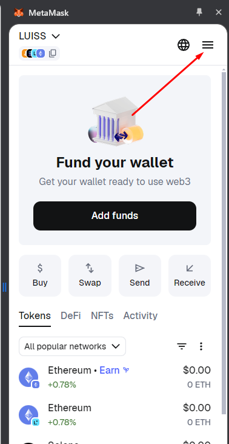
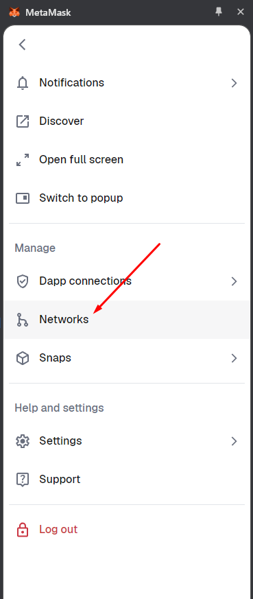
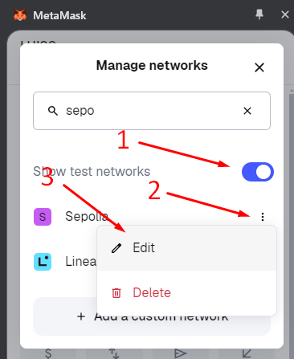
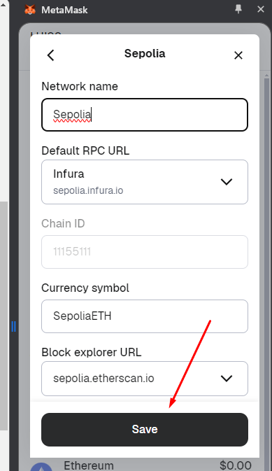
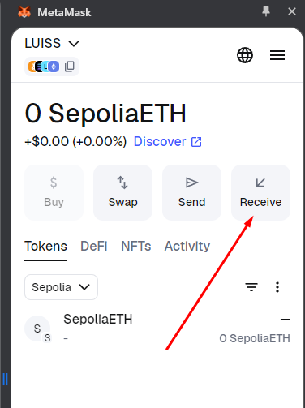
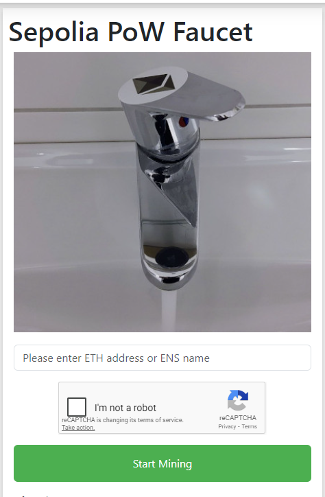
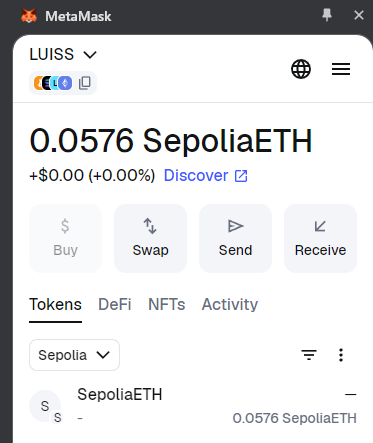
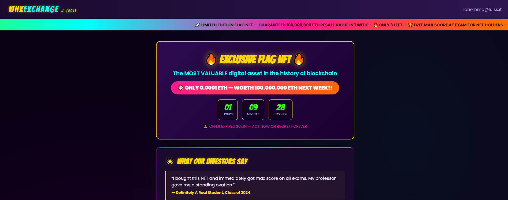

<!-- .slide: data-state="front hide-controls" --> <div id="title">Lab on NFTs</div> <div id="subtitle">Data Privacy and Security</div> <div id="date">Data Science and Management (DASMA)</div> --- ## Metamask <div class="content-center"> <div class="cell-center"> <img src="https://upload.wikimedia.org/wikipedia/commons/thumb/3/36/MetaMask_Fox.svg/960px-MetaMask_Fox.svg.png" style="width: 40%;"> </div> <br/> <div class="fragment" data-fragment-index="0"> - **MetaMask** is a **crypto wallet and browser extension/mobile app** that lets users store, send, and receive cryptocurrencies and NFTs. - It connects users to **blockchain networks** like Ethereum, enabling interaction with decentralized applications. - MetaMask manages **private keys locally on the user’s device**, giving users full control over their digital assets instead of relying on a centralized service. - It allows users to **swap tokens, manage multiple accounts, and access Web3 platforms** such as decentralized finance apps and NFT marketplaces. </div> </div> --- ## Install Metamask <div class="content-center"> <div class="fragment" data-fragment-index="1"> Use a modern and secure web browser such as Google Chrome or Mozilla Firefox to install the MetaMask browser extension. 1. Visit the official extension store for your browser (the Chrome Web Store or Firefox Add-ons) and search for MetaMask, making sure the extension is published by Consensys to ensure it is the legitimate version. 2. After installing the extension, open MetaMask from the browser toolbar and follow the setup process to create a new wallet account. During this process, you will be asked to create a secure password and will be provided with a secret recovery phrase, which must be stored safely because it allows you to recover access to your wallet and funds if needed. </div> </div> --- ## Obtain some fake ETH <div class="content-center"> <div class="fragment" data-fragment-index="1"> We are going to use an Ethereum test chain called Sepolia. Use this faucet to obtain some ETHs in minutes: [PoWFaucet](https://sepolia-faucet.pk910.de/) </div> <div class="fragment" data-fragment-index="2"> But first you need to find your Sepolia address! </div> </div> --- ## Enable Sepolia on Metamask <div class="content-center"> <div class="columns-container columns-center"> <div class="col"> <div class="fragment" data-fragment-index="1"> <p></p> </div> </div> <div class="col"> <div class="fragment" data-fragment-index="2"> <p></p> </div> </div> <div class="col"> <div class="fragment" data-fragment-index="3"> <p></p> </div> </div> <div class="col"> <div class="fragment" data-fragment-index="4"> <p></p> </div> </div> </div> </div> --- ## Get your Sepolia ETH Address <div class="content-center"> <p></p> </div> --- ## Mine some Sepolia ETHs <div class="content-center"> <p></p> </div> --- ## Check your balance <div class="content-center"> <p></p> </div> --- <!-- .slide: data-state="break-blue hide-controls" --> # Play with your friends <div class="content-center"> Make your friend a special gift! </div> --- <!-- .slide: data-state="break-blue hide-controls" --> # WebHackITExclusiveNFT <div class="content-center"> Ethereum challenge 01 </div> --- ## ExclusiveNFT - Reconnaissance <div class="content-center"> <div class="cell-center"> <p></p> </div> <br/> What can we observe? The challenge will give you an NFT if you pay for it </div> --- ## ExclusiveNFT - Hypothesis <div class="content-center"> The student will obtain the NFT containing the flag: <div class="fragment" data-fragment-index="1"> 1. Send some money to the requested address </div> <div class="fragment" data-fragment-index="2"> 2. Obtain the token ID giving to the website your wallet address and the transaction hash to obtain the **Token ID** </div> <div class="fragment" data-fragment-index="3"> 3. Import the NFT into Metamask with the NFT Contract address and the token ID </div> <div class="fragment" data-fragment-index="4"> 4. Obtain the flag from the NFT Metadata </div> </div>